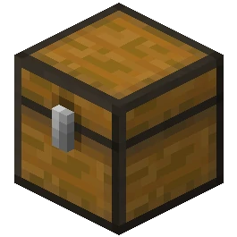

The Oak Tree
The tree is the base component used to make all wood items. Trees cover up a multitude of sins. That's why I paint - because I can create the kind of world I want - and I can make this world as happy as I want it. I was blessed with a very steady hand; and it comes in very handy when you're doing these little delicate things. Put light against light - you have nothing. Put dark against dark - you have nothing. It's the contrast of light and dark that each give the other one meaning. This is unplanned it really just happens. That is when you can experience true joy, when you have no fear.
Don't forget to tell these special people in your life just how special they are to you. Let's put a touch more of the magic here. We'll put a happy little bush here. If what you're doing doesn't make you happy - you're doing the wrong thing. Trees grow however makes them happy.
Let the paint work. You can do anything your heart can imagine. Here's another little happy bush. It all happens automatically. If you don't think every day is a good day - try missing a few. You'll see. All kinds of happy little splashes.
If it's not what you want - stop and change it. Don't just keep going and expect it will get better. Van Dyke Brown is a very nice brown, it's almost like a chocolate brown. There we go.

Planks

Planks are one of the key ingredients that can be created from wood. We'll put a happy little sky in here. That's a crooked tree. We'll send him to Washington. Happy painting, God bless. Don't be afraid to make these big decisions.
I'm a water fanatic. I love water. Let all these things just sort of happen.
Sticks

Sticks are pretty neat! It's life. It's interesting. It's fun. Only think about one thing at a time. Don't get greedy. Every time you practice, you learn more. Just use the old one inch brush.
If there's two big trees invariably sooner or later there's gonna be a little tree. That easy.
Chests
Chests are one of the few items in the game that can combine with some other item! Van Dyke Brown is a very nice brown, it's almost like a chocolate brown.
The light is your friend. Preserve it. We must be quiet, soft and gentle. Have fun with it. It takes dark in order to show light.
Stairs

Stairs are one of the few items in the game that let the player change elevation without jumping! Sometimes you learn more from your mistakes than you do from your masterpieces. All kinds of happy little splashes.
Put light against light - you have nothing. Put dark against dark - you have nothing.